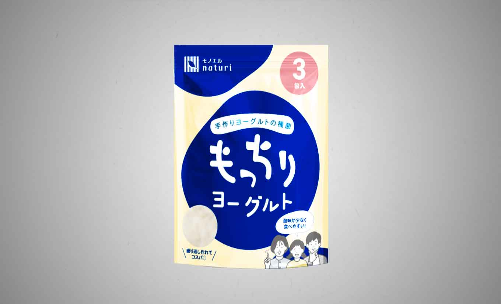
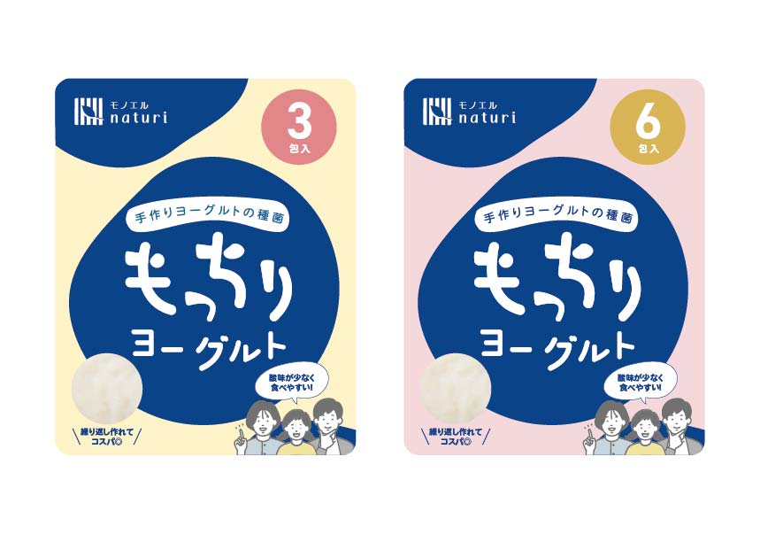

「もっちりヨーグルト」パッケージデザイン
クラウドワークス
クラウドワークスにてコンペに提案したパッケージデザイン。「ヨーグルトの種菌である」「もっちりとしたヨーグルトである」などの発注者から出されていたポイントがわかりやすく伝わるよう、やわらかいもちもちとした図形をメインに据えてデザインしました。「酸味が少なく、家族で食べられる」というコンセプトもあったので、家族のイラストでその点を強調しました。
| 制作時期 | 2025年3月 |
| 使用ツール | Adobe Illustrator |
